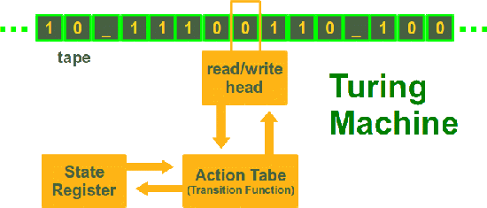

Turing Machine
 Just to let you know straightaway: The Turing machine is not a machine. It is a mathematical model, which was formulated by the English mathematician Alan Turing in 1936. It's a very simple model of a computer, yet it has the complete computing capability of a general purpose computer. The Turing machine serves two needs in theoretical computer science:
- The class of languages defined by a TM, i.e. structured or recursively enumerable languages
- The class of functions it is capable to compute, i.e. the partial recursive functions
Formal Definition of a Turing machine
A deterministic Turing machine can be defined as a 7-tupleM = (Q, Σ, Γ, δ, b, q0, qf)
with
- Q is a finite, non-empty set of states
- Γ is a finite, non-empty set of the tape alphabet
- Σ is the set of input symbols with Σ ⊂ Γ
- δ is a partially defined function, the transition function:
δ : (Q \ {qf}) x Γ → Q x Γ x {L,N,R} - b ∈ &Gamma \ Σ is the blank symbol
- q0 ∈ Q is the initial state
- qf ∈ Q is the set of accepting or final states
Example: Binary Complement function
Let's define a Turing machine, which complements a binary input on the tape, i.e. an input "1100111" e.g. will be turned into "0011000".Σ = {0, 1}
Q = {init, final}
q0 = init
qf = final
| Function Definition | Description |
|---|---|
| δ(init,0) = (init, 1, R) | If the machine is in state "init" and a 0 is read by the head, a 1 will be written, the state will change to "init" (so actually, it will not change) and the head will be moved one field to the right. |
| δ(init,1) = (init, 0, R) | If the machine is in state "init" and a 1 is read by the head, a 0 will be written, the state will change to "init" (so actually, it will not change) and the head will be moved one field to the right. |
| δ(init,b) = (final, b, N) | If a blank ("b"), defining the end of the input string, is read, the TM reaches the final state "final" and halts. |
Implementation of a Turing machine in Python
We implement a Turing Machine in Python as a class. We define another class for the read/write tape of the Turing Machine. The core of the tape inside the class Tape is a dictionary, which contains the entries of the tape. This way, we can have negative indices. A Python list is not a convenient data structure, because Python lists a bounded on one side, i.e. bounded by 0.We define the method __str__(self) for the class Tape. __str__(self) is called by the built-in str() function and the print function uses it to calculate the "informal" string representation of an object, in our case the tape of the TM. The print function in the method show_tape() of our class TuringMachine makes use of this possibility.
With the aid of the method __getitem__(), we have a reading access to the tape via indices. The definition of the method __setitem() allows a writing access as well, as we can see e.g. in the statement "
self.__tape[self.__head_position] = y[1] of our class TuringMachine
implementation"
The class TuringMachine: We define the method __str__(self), which is called by the str() built-in function and by the print statement to compute the "informal" string representation of an object, in our case the string representation of a tape.
class Tape(object):
blank_symbol = " "
def __init__(self,
input=""):
self.__tape = {}
for i in range(len(input)):
self.__tape[i] = input[i]
def __str__(self):
s = ""
min_used_index = min(self.__tape.keys())
max_used_index = max(self.__tape.keys())
for i in range(min_used_index,max_used_index):
s += self.__tape[i]
return s
def __getitem__(self,index):
if index in self.__tape:
return self.__tape[index]
else:
return blank_symbol
def __setitem__(self, pos, char):
self.__tape[pos] = char
class TuringMachine(object):
def __init__(self,
tape = "",
blank_symbol = " ",
tape_alphabet = ["0", "1"],
initial_state = "",
accepting_states = [],
final_states = [],
transition_function = {}):
self.__tape = Tape(tape)
self.__head_position = 0
self.__blank_symbol = blank_symbol
self.__current_state = initial_state
self.__transition_function = transition_function
self.__tape_alphabet = tape_alphabet
self.__final_states = final_states
def show_tape(self):
print(self.__tape)
return True
def step(self):
char_under_head = self.__tape[self.__head_position]
x = (self.__current_state, char_under_head)
if x in self.__transition_function:
y = self.__transition_function[x]
self.__tape[self.__head_position] = y[1]
if y[2] == "R":
self.__head_position += 1
elif y[2] == "L":
self.__head_position -= 1
self.__current_state = y[0]
def final(self):
if self.__current_state in self.__final_states:
return True
else:
return False
Using the TuringMachine class:
from turing_machine import TuringMachine
initial_state = "init",
accepting_states = ["final"],
transition_function = {("init","0"):("init", "1", "R"),
("init","1"):("init", "0", "R"),
("init"," "):("final"," ", "N"),
}
final_states = ["final"]
t = TuringMachine("010011 ",
initial_state = "init",
final_states = final_states,
transition_function=transition_function)
print("Input on Tape:")
t.show_tape()
while not t.final():
t.step()
print("Result of the Turing machine calculation:")
t.show_tape()
It prints the following result:
Input on Tape: 010011 Result of the Turing machine calculation: 101100